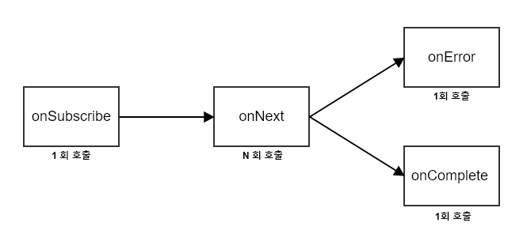

Reactive
Reactive Programming
"외부의 어떤 이벤트나 데이터가 발생하면 거기에 대응하면 방식으로 동작하는 프로그램을 만드는 것"
"데이터 플로우와 상태 변경을 전파한다는 생각에 근간을 둔 프로그래밍 패러다임"
"막힘 없이 흘러다니는 데이터(이벤트)를 통해 사용자에게 자연스러운 응답을 주고, 규모 탄력적으로 리소스를 사용하며 실패에 있어서 유연하게 대처한다."
Reactive
Responsive : 사용자에 대한 반응
시스템이 적시에 응답한다. 응답성은 사용성과 기능성의 기반인데, 그것보다 더 응답성은 문제에 대해서 빠르게 감지하는 것과 효율성을 다루는 것에 초점을 둔다. 반응성(응답성)이 좋은 시스템은 속도와 일정한 응답성을 제공하고 , 신뢰할 수 있는 상향 경계를 수립하므로써, 일정한 품질의 서비스를 제공하는 것에 있다. 이 일관성있는 행동은 에러 처리를 간편화 하고, 사용자 신뢰를 구축하고, 앞선 상호작용을 장려한다.
Scalable(Elastic) : 부하에 대한 반응
시스템은 다양한 작업하에 응답성을 유지한다. Reactive System은 서비스에 제공되기 위한 입력을 할당한 자원을 증가시키거나 감소시키는 것으로써 입력 량의 변화에 응답할 수 있다. 이것은 경합 포인트나 병목현상 가지지 않게 설계되었으며, 공유하고, 컴포넌트를 복제하고, 입력을 분산할 수 있도록 하는 결과를 의도한다. Reactive System은 응답성 뿐만 아니라 예측 가능성을 지원하는데 이는 실시간 성능 측정을 제공하여 알고리즘을 조정할 수 있습니다. 상용 하드웨어 및 소프트웨어 플랫폼에서 비용 효율적인 방식으로 탄력성을 얻을 수 있습니다.
Resillent : 실패 상황에 대한 반응
시스템은 장애가 발생하더라도 응답성을 유지합니다. 이는 고 가용성, Mission Critical 시스템에 적용 됩니다. 탄력성은 복제, 유지, 격리 및 위임에 의해 획득할 수 있습니다. 장애는 각각의 컴포넌트에 포함되어 있기 때문에 각각으로 부터 컴포넌트가 고립하되는 것으로 시스템 전체에 영향일 미치지 않고, 시스템의 일부가 장애 및 복구되는 것을 보장할 수 있습니다. 각각의 컴포넌트의 복수는 새로운 컴포넌트에게 위임되고, 고가용성은 필요에 따라 복제 따라서 보장됩니다. 고객의 기능은 장애를 처리함으로써 부담을 받지 않아도 됩니다.
Event-Driven( Message-Driven ) : 이벤트에 대한 반응
Reactive 시스템은 Location Transparency, Isolation, Loose Coupling을 보장하는 컴포넌트들 사이의 경제를 수입하기 위해서 비동기적인 Message 전달 (Asynchronouse message-passing)에 의존합니다. 이 경제는 메세지로서 장애를 위임하기 위한 의도를 제공합니다. 명시적인 Message 전달을 이용하면 부하관리, 탄력성, 흐름제어 및 시스템에서의 메세지 큐 모니터링, 필요에 따라 Back Pressure를 적용하는 것 을 가능하게 한다. 통신수단으로의 Location Transparent Message는 동일한 구조와 의미의 단일 호스트 또는 클러스터와 동작하기 위한 장애의 관리를 가능하게 합니다. Non-Blocking Communication은 수신자로 하여금 활성 상태에서만 자원을 소모할 수 있게 하여 시스템의 오버헤드를 줄일 수 있습니다.
Functional Reactive Programming
Functional Reactive Programming 은 위에서 살펴본 Reactive Programming을 Functional Programming의 원리를 통해 구현하는 것을 말합니다. 쉽게 말하자면, 비동기적인 데이터 처리를 간단한 함수를 통해 수행하는 프로그래밍을 말합니다.
여기에서 Functional Programming에 대해서 먼저 알아보고 가야하는데, Functional Programming이란 어떤 문제를 해결하는데 있어서 그 과정이나 공식에 매몰되기보다는 그냥 이미 만들어진 함수를 활용하는 방식을 말합니다. 다만, 무조건 활용하는 것이 아니라 함수 자체가 '숨겨진 input과 output'이 없도록 설계되어야 하는 것이 전제 조건입니다.
Reactive Stream 근간 개념
Reactive Programming의 핵심은 비동기(Async) 이벤트와 Observer 디자인 패턴입니다.
비동기 ( Aynchronous )
비동기 이벤트란 프로그램에서 다양한 작업들이 동시에 수행되는 중에 어떤 작업이 완료되는 것과 같은 이벤트를 말합니다. 앱에서 발생하는 비동기적인 이벤트는 정말 다양합니다. 즉, 유저가 앱에 로그인 하는 행위, 로그인해서 유저가 올린 이미지를 조회하는 행위, 모바일 카메라를 작동하는 행위, 다른 사람이 올린 이미지를 조회하는 행위, 다른 사람에게 글과 그림을 공유하는 행위 등이 일어나 앱이 서버와 교신 할 때 마다 알게 모르게 비동기적인 이벤트가 발생하게 됩니다.
Non-Bloking
자신이 호출 되었을 때 제어권을 자신을 호출한 쪽으로 넘기며, 자신을 호출한 쪽에서 다른 일을 할 수 있도록 하는 것을 의미하는 것
Non-Blocking 이란, 어떤 스레드에서 오류가 발생하거나 멈추었을 때 다른 쓰레드에게 영향을 끼치지 않도록 만드는 방법들을 말한다. 공유 자원(메모리, 파일등)를 사용하는 멀티 쓰레드 프로그래밍을 할 때, 특정 공유 자원을 사용하는 부분에서 뮤텍스나 세마포어 등을 사용하여 여러 쓰레드에서 동시에 접근하지 못하도록 개발자가 보장하는 것이 전통적인 방법이었다. 반면 Non-Blocking Algorithm(Wait-freedom, Lock-freedom) 을 사용하면 공유 자원을 안전하게 동시에 사용할 수 있다.
https://stackoverflow.com/questions/37742306/examples-of-wait-lock-obstruction-freedom-and-ooc-methods
Wait-freedom : 모든 호출이 한정된 수의 단계로 끝나도록 보장되는 경우 메소드는 대기하지 않아도 됩니다. wait-free 메소드는 결코 블로킹되지 않으며 교착상태가 발생하지 않으며 참여자는 제한된 수의 호출 후 진행할 수 있으므로 궁핍현상이 발생하지 않습니다.
Lock-freedom : Lock이 없기 때문에 교착상태가 발생하지 않지만 호출이 결국 완료되는 것을 보장하지 않기 때문에 궁핍 현상을 보장하기에는 충분하지 않습니다.
"외부의 어떤 이벤트나 데이터가 발생하면 거기에 대응하면 방식으로 동작하는 프로그램을 만드는 것"
"데이터 플로우와 상태 변경을 전파한다는 생각에 근간을 둔 프로그래밍 패러다임"
"막힘 없이 흘러다니는 데이터(이벤트)를 통해 사용자에게 자연스러운 응답을 주고, 규모 탄력적으로 리소스를 사용하며 실패에 있어서 유연하게 대처한다."
Reactive
Responsive : 사용자에 대한 반응
시스템이 적시에 응답한다. 응답성은 사용성과 기능성의 기반인데, 그것보다 더 응답성은 문제에 대해서 빠르게 감지하는 것과 효율성을 다루는 것에 초점을 둔다. 반응성(응답성)이 좋은 시스템은 속도와 일정한 응답성을 제공하고 , 신뢰할 수 있는 상향 경계를 수립하므로써, 일정한 품질의 서비스를 제공하는 것에 있다. 이 일관성있는 행동은 에러 처리를 간편화 하고, 사용자 신뢰를 구축하고, 앞선 상호작용을 장려한다.
Scalable(Elastic) : 부하에 대한 반응
시스템은 다양한 작업하에 응답성을 유지한다. Reactive System은 서비스에 제공되기 위한 입력을 할당한 자원을 증가시키거나 감소시키는 것으로써 입력 량의 변화에 응답할 수 있다. 이것은 경합 포인트나 병목현상 가지지 않게 설계되었으며, 공유하고, 컴포넌트를 복제하고, 입력을 분산할 수 있도록 하는 결과를 의도한다. Reactive System은 응답성 뿐만 아니라 예측 가능성을 지원하는데 이는 실시간 성능 측정을 제공하여 알고리즘을 조정할 수 있습니다. 상용 하드웨어 및 소프트웨어 플랫폼에서 비용 효율적인 방식으로 탄력성을 얻을 수 있습니다.
Resillent : 실패 상황에 대한 반응
시스템은 장애가 발생하더라도 응답성을 유지합니다. 이는 고 가용성, Mission Critical 시스템에 적용 됩니다. 탄력성은 복제, 유지, 격리 및 위임에 의해 획득할 수 있습니다. 장애는 각각의 컴포넌트에 포함되어 있기 때문에 각각으로 부터 컴포넌트가 고립하되는 것으로 시스템 전체에 영향일 미치지 않고, 시스템의 일부가 장애 및 복구되는 것을 보장할 수 있습니다. 각각의 컴포넌트의 복수는 새로운 컴포넌트에게 위임되고, 고가용성은 필요에 따라 복제 따라서 보장됩니다. 고객의 기능은 장애를 처리함으로써 부담을 받지 않아도 됩니다.
Event-Driven( Message-Driven ) : 이벤트에 대한 반응
Reactive 시스템은 Location Transparency, Isolation, Loose Coupling을 보장하는 컴포넌트들 사이의 경제를 수입하기 위해서 비동기적인 Message 전달 (Asynchronouse message-passing)에 의존합니다. 이 경제는 메세지로서 장애를 위임하기 위한 의도를 제공합니다. 명시적인 Message 전달을 이용하면 부하관리, 탄력성, 흐름제어 및 시스템에서의 메세지 큐 모니터링, 필요에 따라 Back Pressure를 적용하는 것 을 가능하게 한다. 통신수단으로의 Location Transparent Message는 동일한 구조와 의미의 단일 호스트 또는 클러스터와 동작하기 위한 장애의 관리를 가능하게 합니다. Non-Blocking Communication은 수신자로 하여금 활성 상태에서만 자원을 소모할 수 있게 하여 시스템의 오버헤드를 줄일 수 있습니다.
Functional Reactive Programming
Functional Reactive Programming 은 위에서 살펴본 Reactive Programming을 Functional Programming의 원리를 통해 구현하는 것을 말합니다. 쉽게 말하자면, 비동기적인 데이터 처리를 간단한 함수를 통해 수행하는 프로그래밍을 말합니다.
여기에서 Functional Programming에 대해서 먼저 알아보고 가야하는데, Functional Programming이란 어떤 문제를 해결하는데 있어서 그 과정이나 공식에 매몰되기보다는 그냥 이미 만들어진 함수를 활용하는 방식을 말합니다. 다만, 무조건 활용하는 것이 아니라 함수 자체가 '숨겨진 input과 output'이 없도록 설계되어야 하는 것이 전제 조건입니다.
// side-cause와 side-effect가 존재하는 함수
// 함수를 콜할 때 implementation detail을 살펴보지 못한다면 무엇이 어떻게 변할지 알 수 없음
func add() {
number = 5
letter = "S"
title = title + " \ (number) " + letter
}
// 숨겨진 input/ouput이 없는 함수
func add(numberOnt: Int, numberTwo: Int) -> Int {
return numberOne + numberTwo
}
결국 Functional Programming이라는 것은, 결과에 집중하는 실용적인 함수를 정의하고 활용하되,
이러한 함수안에 숨겨진 input과 output이 최대한 없을 수 있도록 선언하는 프로그래밍 패러다임입니다.
Reactive Stream 근간 개념
-
Duality
어떤 체계 간에 존재하는 다음과 같은 논리적 성질. 각각 1:1로 대응하는 개념 xi와 yi(i＝1, 2, …)로
이루어진 체계 S1＝{x1, x2, …}, S2＝{y1, y2, …} 등이 있다고 하자.
여기서 S1과 S2는 전체로서는 같은 체계라도 괜찮다.
S1에 관하여 명제 r(x1, x2, …, xn)가 성립될 때 이 명제에 있어서 각 xi를 대응하는 yi로 치환한
명제 P(y1, y2, …, yn)가 S2에 관하여 성립된다. S1, S2 간에 존재 하는 이와 같은 논리적 성질을
쌍대성이라 하고 xi, yi를 쌍대인 개 념 r(x1, x2, …), P(y1, y2, …)를 쌍대 명제라 한다.
전기 회로에서 는 표와 같이 대응할 때마다 쌍대성이 존재하여 중요하다.
[네이버 지식백과] 쌍대성 [duality] (IT용어사전, 한국정보통신기술협회)
-
Observer
Reactive Programming을 위해서 유저가 입력할 때마다 즉각적으로 반응하려면, 프로그램이 지속적으로
값을 관찰(Observe)해야하고, 값에 변화가 일어날 때 마다 특정 연산이 수행되어야 합니다.
이러한 관찰 패턴을 Observer 또는 Observation 디자인 패턴이라고 하며,
비동기 이벤트를 처리하는 Reactive Programming의 근간이 됩니다. - Reactive Streams - 표준 ( 유수의 기업들이 모여 표준을 만듬 - Netflix, Pivotal, etc ) > Java 9의 표준으로 적용됨
Reactive Programming의 핵심은 비동기(Async) 이벤트와 Observer 디자인 패턴입니다.
비동기 ( Aynchronous )
비동기 이벤트란 프로그램에서 다양한 작업들이 동시에 수행되는 중에 어떤 작업이 완료되는 것과 같은 이벤트를 말합니다. 앱에서 발생하는 비동기적인 이벤트는 정말 다양합니다. 즉, 유저가 앱에 로그인 하는 행위, 로그인해서 유저가 올린 이미지를 조회하는 행위, 모바일 카메라를 작동하는 행위, 다른 사람이 올린 이미지를 조회하는 행위, 다른 사람에게 글과 그림을 공유하는 행위 등이 일어나 앱이 서버와 교신 할 때 마다 알게 모르게 비동기적인 이벤트가 발생하게 됩니다.
Non-Bloking
자신이 호출 되었을 때 제어권을 자신을 호출한 쪽으로 넘기며, 자신을 호출한 쪽에서 다른 일을 할 수 있도록 하는 것을 의미하는 것
Non-Blocking 이란, 어떤 스레드에서 오류가 발생하거나 멈추었을 때 다른 쓰레드에게 영향을 끼치지 않도록 만드는 방법들을 말한다. 공유 자원(메모리, 파일등)를 사용하는 멀티 쓰레드 프로그래밍을 할 때, 특정 공유 자원을 사용하는 부분에서 뮤텍스나 세마포어 등을 사용하여 여러 쓰레드에서 동시에 접근하지 못하도록 개발자가 보장하는 것이 전통적인 방법이었다. 반면 Non-Blocking Algorithm(Wait-freedom, Lock-freedom) 을 사용하면 공유 자원을 안전하게 동시에 사용할 수 있다.
https://stackoverflow.com/questions/37742306/examples-of-wait-lock-obstruction-freedom-and-ooc-methods
Wait-freedom : 모든 호출이 한정된 수의 단계로 끝나도록 보장되는 경우 메소드는 대기하지 않아도 됩니다. wait-free 메소드는 결코 블로킹되지 않으며 교착상태가 발생하지 않으며 참여자는 제한된 수의 호출 후 진행할 수 있으므로 궁핍현상이 발생하지 않습니다.
Lock-freedom : Lock이 없기 때문에 교착상태가 발생하지 않지만 호출이 결국 완료되는 것을 보장하지 않기 때문에 궁핍 현상을 보장하기에는 충분하지 않습니다.
1~5까지의 숫자를 이용해서 리스트를 생성하고, 이를 가져와서(pull) 출력을 한다.
Observer 패턴을 이용한 필요한 데이터를 전달(push)해서 출력한다.
// List Type 은 Iterable 의 sub type 이다.
List<Integer> list = Arrays.asList(1, 2, 3, 4, 5);
// 이것은 Iterable 이기 때문에 여기에서 List 를 사용할 수 있는 것임
for (Integer i : list) {
System.out.println(i);
}
// Iterable 로 받아도 문제가 없음
Iterable<Integer> iter = Arrays.asList(1, 2, 3, 4, 5, 6, 7, 8, 9, 10);
// 이터레이터를 통해서 반복적으로 사용할 수 있게 하려면 1.5 이전에는 아래와 같이 사용해야 했다.
for (Iterator<Integer> it = iter.iterator(); it.hasNext(); ) {
System.out.println(((Iterator) it).next());
}
// Lamda 의 관심은 함수 하나
// 1부터 10까지를 계속해서 호출해서 쓸 수 있음
Iterable<Integer> iter1 = () ->
new Iterator<Integer>() {
int i = 0;
final static int MAX = 10;
@Override
public boolean hasNext() {
return i < MAX;
}
@Override
public Integer next() {
return ++i;
}
};
// 1.5 이상은 아래와 같이 사용 가능하다.
for (Integer i : iter1) {
System.out.println(i);
}
Observer 패턴을 이용한 필요한 데이터를 전달(push)해서 출력한다.
public class Ob {
public static void main(String[] args) {
// notifyObservers 호출이되면 update 가 호출이 된다.
Observer ob = new Observer() {
@Override
public void update(Observable o, Object arg) {
System.out.println(arg);
// Thread는 풀에 있는 스레드를 받게 처리되는 것은 ExecutorService 의 Thread를 메인스레드에서 분리해서 사용할 수 있다.
System.out.println(Thread.currentThread().getName() + " " + arg);
}
};
IntObservable observable = new IntObservable();
observable.addObserver(ob);
// Event Driven에서 주로 사용하는 방식인 감시자 패턴
// 메인 스레드에서 동작하게 하고 있음
observable.run();
}
static class IntObservable extends Observable implements Runnable {
@Override
public void run() {
for (int i = 0; i < 10; i++) {
setChanged();
// 아래의 두개는 Duality 라고 이야기 할 수 있다.
notifyObservers(i); // push method(DATA)
// int i = it.next() // pull DATA method(void)
}
}
}
}
Iterable <------> Observable ( 쌍대성 ) - Duality : 비슷한 구조를 가진다.
Iterable 은 Pulling 방식
Observable 은 Push 방식
Observable 와 Iterable 이 쌍대성을 가지는 구조
처리하려는 기능은 같지만 처리 과정에 있어서 서로 상반되는 부분을 duality라고 하면 좀 더 이해가 쉬울 수 있다.
Pulling, Push 의 차이
옵저버 패턴의 장점
다이내믹하게 구성할 때 장점이 있음
관심이 있어하는 모든 옵저버에게 멀티 캐스트와 브로드 캐스팅이 가능하다.
Iterable 은 Pulling 방식
Observable 은 Push 방식
Observable 와 Iterable 이 쌍대성을 가지는 구조
처리하려는 기능은 같지만 처리 과정에 있어서 서로 상반되는 부분을 duality라고 하면 좀 더 이해가 쉬울 수 있다.
Pulling, Push 의 차이
옵저버 패턴의 장점
다이내믹하게 구성할 때 장점이 있음
관심이 있어하는 모든 옵저버에게 멀티 캐스트와 브로드 캐스팅이 가능하다.
Reactive Stream의 API Component 규칙
Reactive Basic Flow : Publisher - Subscriber - Subscription

Subscriber가 Publisher에게 subscribe 하면 Publisher가 데이터 또는 시퀀스를 전달하게 된다. 전달하기 전에 Publisher는 Subscribe에 정의된 onSubscribe()를 호출하고, Subscriber는 request(n)를 호출하여 몇 개의 데이터를 보내달라고 요청하게 된다. 이때 Subscription을 사용하는데, Request(n)을 호출하여 데이터 전송 요청을 하게 되면 Publisher에서는 0에서 N의 데이터 또는 시퀀스를 Subscriber에게 전달하게 된다.
Link : https://brunch.co.kr/@springboot/153
Link : https://m.blog.naver.com/jdub7138/220983291803s
Link : https://brunch.co.kr/@oemilk/79
Link : http://www.zdnet.co.kr/view/?no=20161010104628
- Subscriber
Subscriber는 Observer 입니다.
// 아래의 4개의 메소드는 반드시 implement 되어야 합니다. public interface Subscriber { public void onSubscribe(Subscription s); public void onNext(T t); public void onError(Throwable t); public void onComplete(); }

- onSubscribe : 최초 호출되는 메소드, Subscriber를 사용할 때는 무조건 처음에 호출해야합니다.
- onNext : 기존의 Observer에서 update와 같은 역할을 합니다. 데이터를 받을 때 사용합니다.
- onComplete : 완료 되었을 때,
- onError : 에러가 발생했을 때,
-
Publisher
Publisher는 Observable 입니다. Subscriber 는 Publisher 의 subscribe를 통해 등록합니다.public interface Publisher { public void subscribe(Subscriber<? super T> s); } -
Subscription
public interface Subscription { public void request(long n); public void cancel(); }
request는 long 타입의 파라미터를 받고 있는데 Subscriber가 이 메소드를 통해 요청을 하게 됩니다. 만약 5개의 데이터를 필요하다고 가정했을 때, reqeust 에 5를 넣어서 호출하면 Subscription은 5개를 호출하게 됩니다. 즉, 10개의 데이터가 있을 때, reqeust가 5를 받아 처리한다면 5개 -> 5개 를 보내줄 수 있게 처리합니다. - Processor
Reactive Basic Flow : Publisher - Subscriber - Subscription
Subscriber가 Publisher에게 subscribe 하면 Publisher가 데이터 또는 시퀀스를 전달하게 된다. 전달하기 전에 Publisher는 Subscribe에 정의된 onSubscribe()를 호출하고, Subscriber는 request(n)를 호출하여 몇 개의 데이터를 보내달라고 요청하게 된다. 이때 Subscription을 사용하는데, Request(n)을 호출하여 데이터 전송 요청을 하게 되면 Publisher에서는 0에서 N의 데이터 또는 시퀀스를 Subscriber에게 전달하게 된다.
Link : https://brunch.co.kr/@springboot/153
Link : https://m.blog.naver.com/jdub7138/220983291803s
Link : https://brunch.co.kr/@oemilk/79
Link : http://www.zdnet.co.kr/view/?no=20161010104628
Volume이 정해져 있이 않는 실시간의 데이터 스트림을 처리하는 것은 비동기 시스템에서 필요하다.
그리고 대부분의 이슈는 해당 스트팀의 최종 목적이가 과부하가 발생하지 않도록 과거의 데이터 자원을 조심스럽게 통제하기 위한 것이다.
협력하는 다수의 네트워크 호스트 또는 다중 CPU 코에 대해서 컴퓨팅 자원의 병렬 사용을 활성하기 위해서 비동기적으로 필요하다.
Reactive Stream의 주요 목표는 스트림 데이터의 변화를 비동기 영역에서 통제하는 것이다. 다른말로 하면 , 내부 압력은 해당 모델의 완벽한 부분인데, 연결을 맺기위한 스레드들 사이에서 중재하기 위한 큐들을 허락하기 위해서이다.
Reactive Stream은 서로 다른 API Component 사이의 스트림 데이터를 중재하기 위한 것에 대해서만 오로지 고려하고 있다.
https://www.reactivemanifesto.org/
https://projectreactor.io/docs/core/release/reference/
https://www.reactivemanifesto.org/
https://projectreactor.io/docs/core/release/reference/
- Publisher
- Subscriber
- Subscription
- Processor
package com.reactive.reactive;
import org.reactivestreams.Publisher;
import org.reactivestreams.Subscriber;
import org.reactivestreams.Subscription;
import java.util.Arrays;
import java.util.Iterator;
import java.util.concurrent.ExecutorService;
import java.util.concurrent.Executors;
import java.util.concurrent.TimeUnit;
// Reactive Programming - Event Driven
// 동시성을 구현하는 예제
// GRPC
public class PubSub {
public static void main(String[] args) throws InterruptedException {
// Publisher <- Observable
// Subscriber <- Observer
Iterable<Integer> itr = Arrays.asList(1,2,3,4,5);
ExecutorService executorService = Executors.newSingleThreadExecutor();
Publisher p = new Publisher() {
@Override
public void subscribe(Subscriber subscriber) {
Iterator<Integer> it = itr.iterator();
// 반드시 호출해야하는 것은 onSubscribe 이다
// Subscription 을 통해서 구독하겠다는 등록을 한다. - 반드시 등록되어야 한다.
// Subscription 을 통해서 속도 제어 및 조절이 가능하다.
subscriber.onSubscribe(new Subscription() {
@Override
public void request(long n) {
// 자바 언어의 일관성을 지키기 위해서 자유변수를 할당하는 데 사용 할 수 없음 : 쓰레드 한정 법칙 위배
executorService.submit(() -> {
int i = 0;
try{
while(i++ < n){
if(it.hasNext()){
subscriber.onNext(it.next());
}else{
subscriber.onComplete();
break;
}
}
}catch(RuntimeException e){
subscriber.onError(e.fillInStackTrace());
}
});
}
@Override
public void cancel() {
}
});
}
};
// Subscriber 는 순차적으로 데이터가 전달될 것으로 가정한다.
Subscriber<Integer> s = new Subscriber<Integer>() {
Subscription subscription;
@Override
public void onSubscribe(Subscription subscription) {
System.out.println("onSubscribe");
this.subscription = subscription;
this.subscription.request(Long.MAX_VALUE);
}
int bufferSize = 2;
@Override
public void onNext(Integer integer) {
// Observer 패턴의 Update 와 동일함.
System.out.println( Thread.currentThread().getName() + " OnNext " + integer);
// 다음 것을 호출 할 것인지를 여기에서 처리가 가능함.
// 버퍼 사이즈를 지정하고 그 사이즈가 모두 차면 진행할 수 있는 방식으로 처리 가능.
if(--bufferSize <= 0){
bufferSize = 2; // 버퍼 사이즈에 따라서 처리할 수 있는 방식
subscription.request(2);
}
}
@Override
public void onError(Throwable throwable) {
// Observer 패턴에는 에러가 났을 때가 없는데 이를 처리하는 부분
System.out.println( Thread.currentThread().getName() + " OnError : " + throwable.getMessage());
}
@Override
public void onComplete() {
// Observer 패턴에는 완료가되었다는 메세지가 없음
System.out.println("OnComplete");
}
};
p.subscribe(s);
executorService.awaitTermination(10, TimeUnit.HOURS);
executorService.shutdown();
}
}
- Generics를 이용한 Sub/Pub 예제
-
함수형 인터페이스의 활용
public class CustomSubscriber<T,R> implements Subscriber<T> { private Subscriber subscriber; public CustomSubscriber(Subscriber<? super R> subscriber){ this.subscriber = subscriber; } @Override public void onSubscribe(Subscription subscription) { subscriber.onSubscribe(subscription); } @Override public void onNext(T t) { subscriber.onNext(t); } @Override public void onError(Throwable t) { subscriber.onError(t); } @Override public void onComplete() { subscriber.onComplete(); } } public class Sample11_reactiveStreams11 { public static void main(String[] args) { Publisher<Integer> pub = settingPublisher(Stream.iterate(1, a -> a + 1).limit(10).collect(Collectors.toList())); Publisher<StringBuilder> reducePublisher= reducePublisher(pub, new StringBuilder(), (a, b) -> a.append(b + ",")); reducePublisher.subscribe(logSubscriber()); } private static Publisher<Integer> settingPublisher(List<Integer> iter) { return new Publisher<Integer>() { Iterable<Integer> iteratorable = iter; @Override public void subscribe(Subscriber<? super Integer> subscriber) { subscriber.onSubscribe(new Subscription() { @Override public void request(long n) { try { iteratorable.forEach(subscriber::onNext); subscriber.onComplete(); }catch (Exception e) { subscriber.onError(e.getCause()); } } @Override public void cancel() { } }); } }; } private static <T,R> Publisher<R> reducePublisher(Publisher<T> pub, R init, BiFunction<R, T, R> appendBiFunction) { return new Publisher<R>() { @Override public void subscribe(Subscriber<? super R> subscriber) { pub.subscribe(new CustomSubscriber<T,R>(subscriber){ R result = init; @Override public void onNext(T t) { result = appendBiFunction.apply(result, t); } @Override public void onComplete() { subscriber.onNext(result); subscriber.onComplete(); } }); } }; } private static <T> Subscriber<T> logSubscriber() { return new Subscriber<T>() { @Override public void onSubscribe(Subscription subscription) { System.out.println("onSubscribe :"); subscription.request(Long.MAX_VALUE); } @Override public void onNext(T t) { // 정상적인 데이터 System.out.println("OnNext : " + t); } @Override public void onError(Throwable throwable) { // 에러 System.out.println("OnError : {}" + throwable.getMessage()); } @Override public void onComplete() { // 완료 시그널 처리 System.out.println("OnComplete : {}" ); } }; } } -
Operator를 연결하는 처리 예제
대부분의 Operator는 Observable을 운영하고, 반환하는 것에 대한 것이다. 이는 우리가 여러 Operator를 연결하는 것을 가능하게 한다.public class SampleOperators { public static void main(String[] args) { List<Integer> list = Stream.iterate(0, a -> a + 1).limit(100).collect(Collectors.toList()); Publisher<Integer> publisher = getPublisher(list); Publisher<Integer> operator = getOperator(publisher); Subscriber<Integer> subscriber = getSubscriber(); operator.subscribe(subscriber); } private static Publisher getPublisher(List<Integer> list) { return new Publisher(){ @Override public void subscribe(Subscriber subscriber) { subscriber.onSubscribe(new Subscription() { @Override public void request(long n) { list.forEach(integerItem -> { subscriber.onNext(integerItem); }); } @Override public void cancel() { } }); } }; } private static Publisher<Integer> getOperator(Publisher operator) { return new Publisher<Integer>() { @Override public void subscribe(Subscriber<? super Integer> subscriber) { operator.subscribe(new Subscriber<Integer>(){ @Override public void onSubscribe(Subscription subscription) { subscriber.onSubscribe(subscription); } @Override public void onNext(Integer integer) { int value = integer + 10; subscriber.onNext(value); } @Override public void onError(Throwable t) { subscriber.onError(t); } @Override public void onComplete() { subscriber.onComplete(); } }); } }; } private static Subscriber<Integer> getSubscriber() { return new Subscriber<Integer>() { @Override public void onSubscribe(Subscription subscription) { subscription.request(Long.MAX_VALUE); } @Override public void onNext(Integer integer) { System.out.println("onNext 결과 값 : " + integer); } @Override public void onError(Throwable t) { } @Override public void onComplete() { } }; } } -
Bloking IO를 사용하거나 수행이 느린 경우 : SubscribeOn
public class SubscribeOn { public static void main(String[] args) { List<Integer> arrayList = Stream.iterate(1 , i -> i + 1).limit(10).collect(Collectors.toList()); // Publisher 가 아주 느린 경우에 이를 사용하는 방식이다. Publisher<Integer> publisher = new Publisher<Integer>() { @Override public void subscribe(Subscriber<? super Integer> subscriber) { subscriber.onSubscribe(new Subscription() { @Override public void request(long n) { System.out.println( Thread.currentThread().getName() + " request() "); arrayList.forEach(intVal -> { subscriber.onNext(intVal); }); subscriber.onComplete(); } @Override public void cancel() { } }); } }; Publisher<Integer> operator = new Publisher<Integer>() { @Override public void subscribe(Subscriber<? super Integer> subscriber) { ExecutorService executorService = Executors.newSingleThreadScheduledExecutor(); executorService.submit(() -> { publisher.subscribe(new Subscriber<Integer>() { @Override public void onSubscribe(Subscription subscription) { subscriber.onSubscribe(subscription); } @Override public void onNext(Integer integer) { subscriber.onNext(integer); } @Override public void onError(Throwable t) { subscriber.onError(t); } @Override public void onComplete() { subscriber.onComplete(); executorService.shutdown(); } }); }); } }; Subscriber<Integer> subscriber = new Subscriber<Integer>() { @Override public void onSubscribe(Subscription subscription) { subscription.request(Long.MAX_VALUE); } @Override public void onNext(Integer integer) { System.out.println( Thread.currentThread().getName() + " onNext : " + integer); } @Override public void onError(Throwable t) { } @Override public void onComplete() { } }; operator.subscribe(subscriber); } } -
데이터 생성은 빠르지만 데이터를 소모하는 과정이 소요시간이 발생하는 경우 : PublishOn
public class PublisherOn { public static void main(String[] args) { List<Integer> arrayList = Stream.iterate(1 , i -> i + 1).limit(100).collect(Collectors.toList()); // Subscriber 가 아주 느린 경우에 이를 사용하는 방식이다. Publisher<Integer> publisher = new Publisher<Integer>() { @Override public void subscribe(Subscriber<? super Integer> subscriber) { subscriber.onSubscribe(new Subscription() { @Override public void request(long n) { arrayList.forEach(integer -> { subscriber.onNext(integer); }); subscriber.onComplete(); } @Override public void cancel() { } }); } }; Publisher<Integer> operator = new Publisher<Integer>() { @Override public void subscribe(Subscriber<? super Integer> subscriber) { publisher.subscribe(new Subscriber<Integer>() { ExecutorService executorService = Executors.newSingleThreadExecutor(); @Override public void onSubscribe(Subscription subscription) { subscriber.onSubscribe(subscription); } @Override public void onNext(Integer integer) { executorService.execute(() -> { subscriber.onNext(integer); }); } @Override public void onError(Throwable t) { executorService.execute(() -> { subscriber.onError(t); }); executorService.shutdown(); } @Override public void onComplete() { executorService.execute(() -> { subscriber.onComplete(); }); executorService.shutdown(); } }); } }; Subscriber<Integer> subscriber = new Subscriber<Integer>() { @Override public void onSubscribe(Subscription subscription) { subscription.request(Long.MAX_VALUE); } @Override public void onNext(Integer integer) { System.out.println(Thread.currentThread().getName() + " OnNext : " + integer); } @Override public void onError(Throwable t) { } @Override public void onComplete() { } }; operator.subscribe(subscriber); } } - SubscribeOn 과 PublishOn을 같이 사용하면서 Thread를 종료시키는 예제
- Flux에 적용해보는 예제
- Interval과 특정 조건에서 종료 시키기
- Future를 활용하는 예제
- FutureTask를 활용하는 예제
- Callable를 활용하는 예제
- Callback 스타일을 Custom Class로 구현하는 예제
Mono 와 Flux
Mono는 0-1개의 결과만을 처리하기 위한 Reactor의 객체이고, Flux는 0-N개인 여러 개의 결과를 처리하는 객체입니다. Reactor를 사용해 일련의 스트림을 코드로 작성하다 보면 보통 여러 스트림을 하나의 결과를 모아줄 때 Mono를 쓰고, 각각의 Mono를 합쳐서 여러 개의 값을 여러 개의 값을 처리하는 Flux로 표현할 수도 있습니다
Mono는 0-1개의 결과만을 처리하기 위한 Reactor의 객체이고, Flux는 0-N개인 여러 개의 결과를 처리하는 객체입니다. Reactor를 사용해 일련의 스트림을 코드로 작성하다 보면 보통 여러 스트림을 하나의 결과를 모아줄 때 Mono를 쓰고, 각각의 Mono를 합쳐서 여러 개의 값을 여러 개의 값을 처리하는 Flux로 표현할 수도 있습니다